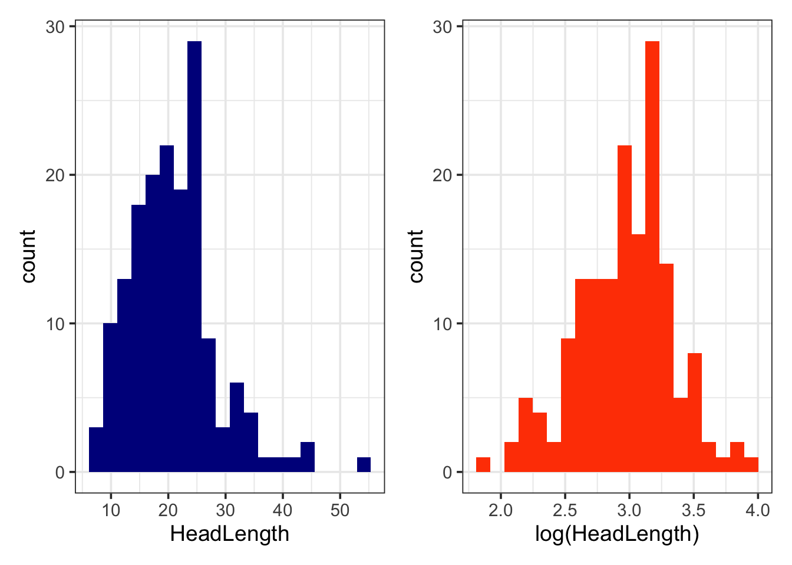

Chapter 8 Macroevolutionary models for continuous traits
The aims of this exercise are to learn how to use R to fit macroevolutionary models in R to continuous traits.
We will be using the evolution of head shape in natricine snakes as an example. The data and modified tree come from V. Deepak, Gower, and Cooper (2023), and the tree comes from V. Deepak et al. (2021). I’ve removed a few species and a few variables to make things a bit more straightforward. If you want to see the full results check out V. Deepak, Gower, and Cooper (2023)!
Before you start
- Open the
08-ModelsContinuous.RProjfile in the08-ModelsContinuousfolder to open your R Project for this exercise.
You will also need to install the following packages:
tidyverse- for reading, manipulating and plotting dataape- functions for reading, plotting and manipulating phylogeniesgeiger- to fit models of evolutionpatchwork- to plot multi-panel plots
8.1 Preparation
To begin we need to load the packages for this practical.
# Load the packages
library(tidyverse)
library(ape)
library(geiger)
library(patchwork)Next we need to prepare the tree and data for the analyses. In the 04-Preparation exercise we read in our tree and data, checked them, and matched them so only species in both were retained. Please refer to that exercise for more details on how and why we do these things, or run through it now if you haven’t previously.
It is important to do these things before beginning a phylogenetic comparative analysis, so let’s run through that code again here.
# Read in the data
snakedata <- read_csv("data/snake-heads.csv")
# Check everything loaded corrected
glimpse(snakedata)## Rows: 206
## Columns: 9
## $ Species <chr> "Adelophis_foxi", "Afronatrix_anoscopus_2", "Amphiesma_beddomei", "…
## $ Ecomorph <chr> "Burrowing", "Aquatic", "Terrestrial", "Terrestrial", "Terrestrial"…
## $ Diet <chr> "annelids", "aquatic generalist", "anurans", "anurans", "generalist…
## $ ReproductiveMode <chr> "Viviparous", "Oviparous", "Oviparous", "Oviparous", "Oviparous", "…
## $ HeadLength <dbl> 12.560, 25.100, 15.060, 20.105, 19.950, 18.810, 16.375, 22.640, 17.…
## $ HeadWidth <dbl> 6.60, 15.80, 7.82, 9.13, 10.32, 9.82, 8.39, 11.30, 9.04, 9.55, 4.49…
## $ HeadHeight <dbl> 5.43, 10.30, 5.40, 6.61, 7.56, 5.80, 6.40, 8.70, 5.68, 6.64, 4.19, …
## $ EyeDistance <dbl> 4.01, 7.40, 4.85, 5.85, 5.84, 5.42, 6.00, 6.05, 5.01, 6.39, 3.12, 3…
## $ TotalLength <dbl> 105, 194, 106, 185, 165, 155, NA, 163, 130, 309, 31, 62, 56, 35, 16…To load the tree we will use read.nexus.
# Read in the tree
snaketree <- read.nexus("data/snake-tree.nex")
# Check it loaded correctly
str(snaketree)## List of 4
## $ edge : int [1:496, 1:2] 250 251 252 253 254 255 256 257 258 259 ...
## $ edge.length: num [1:496] 4.695 2.225 0.587 0.307 0.832 ...
## $ Nnode : int 248
## $ tip.label : chr [1:249] "Rhabdophis_leonardi" "Rhabdophis_nuchalis_1" "Rhabdophis_nuchalis_2" "Rhabdophis_adleri_1" ...
## - attr(*, "class")= chr "phylo"
## - attr(*, "order")= chr "cladewise"Remember to check the tree is dichotomous, i.e. has no polytomies, rooted, and ultrametric.
# Check whether the tree is binary
# We want this to be TRUE
is.binary(snaketree)## [1] TRUE# Check whether the tree is rooted
# We want this to be TRUE
is.rooted(snaketree)## [1] TRUE# Check whether the tree is ultrametric
# We want this to be TRUE
is.ultrametric(snaketree)## [1] TRUENext check that the species names match up in the tree and the data. This should reveal any typos and/or taxonomic differences that need to be fixed before going any further. Note that in this dataset the species names are in the column Species.
# Check whether the names match in the data and the tree
check <- name.check(phy = snaketree, data = snakedata,
data.names = snakedata$Species)
# Look at check
check## $tree_not_data
## [1] "Afronatrix_anoscopus_1" "Afronatrix_anoscopus_3"
## [3] "Aspidura_ravani" "Atretium_schistosum_1"
## [5] "Blythia_hmuifang" "Fowlea_piscator_1"
## [7] "Fowlea_piscator_3" "Fowlea_piscator_4"
## [9] "Hebius_andreae" "Hebius_atemporale_2"
## [11] "Hebius_atemporale_3" "Hebius_atemporale_4"
## [13] "Hebius_bitaeniatum_1" "Hebius_bitaeniatum_2"
## [15] "Hebius_bitaeniatum_3" "Hebius_boulengeri_1"
## [17] "Hebius_cf._boulengeri" "Hebius_concelarum"
## [19] "Hebius_craspedogaster_1" "Hebius_craspedogaster_3"
## [21] "Hebius_deschauenseei_1" "Hebius_deschauenseei_2"
## [23] "Hebius_ishigakiensis" "Hebius_khasiense_2"
## [25] "Hebius_khasiense_3" "Hebius_leucomystax"
## [27] "Hebius_octolineatum_1" "Hebius_octolineatum_2"
## [29] "Hebius_optatum_2" "Hebius_popei_1"
## [31] "Hebius_pryeri_1" "Hebius_sangzhiensis"
## [33] "Hebius_sauteri_2" "Hebius_sp"
## [35] "Hebius_sp1" "Hebius_sp2"
## [37] "Hebius_sp4" "Hebius_taronense"
## [39] "Hebius_venningi_1" "Hebius_venningi_3"
## [41] "Hebius_venningi_4" "Hebius_yanbianensis"
## [43] "Herpetoreas_burbrinki" "Limnophis_branchi"
## [45] "Natriciteres_olivacea_2" "Natriciteres_sylvatica_2"
## [47] "Natriciteres_sylvatica_3" "Natrix_helvatica"
## [49] "Natrix_tessellata_1" "Opisthotropis_cheni"
## [51] "Opisthotropis_daovantieni" "Opisthotropis_durandi"
## [53] "Opisthotropis_guangxiensis" "Opisthotropis_haihaensis"
## [55] "Opisthotropis_hungtai" "Opisthotropis_kuatunensis"
## [57] "Opisthotropis_laui" "Opisthotropis_maculosa"
## [59] "Opisthotropis_maxwelli" "Opisthotropis_shenzhenensis"
## [61] "Opisthotropis_voquyi" "Opisthotropis_zhaoermii"
## [63] "Rhabdophis_adleri_1" "Rhabdophis_adleri_2"
## [65] "Rhabdophis_callichromus" "Rhabdophis_formosanus"
## [67] "Rhabdophis_guangdongensis" "Rhabdophis_nuchalis_1"
## [69] "Rhabdophis_nuchalis_2" "Rhabdophis_nuchalis_pentasupralabialis"
## [71] "Rhabdophis_pentasupralabialis" "Rhabdophis_swinhonis_2"
## [73] "Thamnophis_exsul_1" "Thamnophis_gigas"
## [75] "Thamnophis_mendax" "Thamnophis_nigronuchalis"
## [77] "Thamnophis_ordinoides" "Thamnophis_scalaris_1"
## [79] "Thamnophis_scaliger_2" "Trachischium_apteii"
## [81] "Trachischium_monticola_2" "Trimerodytes_praemaxillaris"
## [83] "Trimerodytes_yapingi" "Tropidonophis_dahlii"
## [85] "Tropidonophis_dendrophiops" "Tropidonophis_multiscutellatus_2"
## [87] "Tropidonophis_statisticus_2"
##
## $data_not_tree
## [1] "Amphiesma_stolatum" "Amphiesma_stolatum_WII"
## [3] "Aspidura_brachyorrhos" "Aspidura_copei"
## [5] "Fowlea_flavipunctatus" "Fowlea_melanzostus"
## [7] "Hebius_bitaeniatum_4" "Hebius_celabicus"
## [9] "Hebius_clerki" "Hebius_flavifrons"
## [11] "Hebius_groundwateri" "Hebius_inas"
## [13] "Hebius_petersi" "Hebius_sanguinea"
## [15] "Hebius_sarasinorum" "Hebius_sarawacensis"
## [17] "Hebius_vibakari_2" "Hebius_vibakari_ruthveni"
## [19] "Herpetoreas_sieboldi" "Hydrablabes_periops"
## [21] "Hydrablabes_prafrontalis" "Hydraethiops_laevis"
## [23] "Isanophis_boonsongi" "Opisthotropis_spenceri"
## [25] "Paratapinophis_praemaxillaris" "R_lineatus"
## [27] "Rhabdophis_barbouri" "Rhabdophis_chrysargoides"
## [29] "Rhabdophis_chrysargos" "Smithophis_sp"
## [31] "Storeria_hidalgoensis" "Thamnophis_elegans_lineolata"
## [33] "Thamnophis_rossmani" "Thamnophis_rufipunctatus_unilabialis"
## [35] "Trachischium_susantai" "Tropidonophis_celebicus"
## [37] "Tropidonophis_elongatus" "Tropidonophis_halmahericus"
## [39] "Tropidonophis_hypomelas" "Tropidonophis_mairii_brongersmai"
## [41] "Tropidonophis_mcdowelli" "Tropidonophis_novaeguinea"
## [43] "Tropidonophis_parkeri" "Tropidonophis_truncatus"There are a lot of species in the tree that are not in the data (n = 87) and vice versa (n = 44)! But (you’ll have to take my word for it!) all the excluded species are excluded because they are genuinely missing, not because of any typos, so we can move on.
Having a lot of species missing from trees and data is not uncommon. To build trees we usually need molecular data which may be absent for newly collected specimens, or for older specimens. Likewise, it can be really difficult to gather all the data required for all of the species in a group - we know very little about the natural history of some species for example. This is nothing to panic about in your own datasets, but knowing which species are in the tree could help you target species to collate extra data for.
Finally remove species not in the data and the tree and ensure the data is a data frame.
# Remove species missing from the data
mytree <- drop.tip(snaketree, check$tree_not_data)
# Remove species missing from the tree
matches <- match(snakedata$Species, check$data_not_tree, nomatch = 0)
mydata <- subset(snakedata, matches == 0)
# Look at the tree summary
str(mytree)## List of 4
## $ edge : int [1:322, 1:2] 163 164 165 166 167 168 169 170 171 172 ...
## $ edge.length: num [1:322] 4.695 2.225 0.587 0.307 0.832 ...
## $ Nnode : int 161
## $ tip.label : chr [1:162] "Rhabdophis_leonardi" "Rhabdophis_nuchalis_3" "Rhabdophis_swinhonis_1" "Rhabdophis_nigrocinctus" ...
## - attr(*, "class")= chr "phylo"
## - attr(*, "order")= chr "cladewise"# Look at the data
glimpse(mydata)## Rows: 162
## Columns: 9
## $ Species <chr> "Adelophis_foxi", "Afronatrix_anoscopus_2", "Amphiesma_beddomei", "…
## $ Ecomorph <chr> "Burrowing", "Aquatic", "Terrestrial", "Terrestrial", "Terrestrial"…
## $ Diet <chr> "annelids", "aquatic generalist", "anurans", "anurans", "generalist…
## $ ReproductiveMode <chr> "Viviparous", "Oviparous", "Oviparous", "Oviparous", "Oviparous", "…
## $ HeadLength <dbl> 12.560, 25.100, 15.060, 20.105, 18.810, 16.375, 22.640, 19.760, 10.…
## $ HeadWidth <dbl> 6.60, 15.80, 7.82, 9.13, 9.82, 8.39, 11.30, 9.55, 4.03, 4.90, 3.44,…
## $ HeadHeight <dbl> 5.43, 10.30, 5.40, 6.61, 5.80, 6.40, 8.70, 6.64, 3.24, 4.41, 3.12, …
## $ EyeDistance <dbl> 4.01, 7.40, 4.85, 5.85, 5.42, 6.00, 6.05, 6.39, 3.34, 2.27, 1.70, 3…
## $ TotalLength <dbl> 105, 194, 106, 185, 155, NA, 163, 309, 62, 35, 16, 23, NA, 33, 81, …# Convert to a dataframe
mydata <- as.data.frame(mydata)
# Check this is now a data frame
class(mydata)## [1] "data.frame"Overall we have 162 species in the data and the tree.
Now we’re ready to run our analyses!
8.2 Models of evolution for continuous traits
For fitting models of evolution to continuous data we will use the fitContinuous function in the R package geiger. fitContinuous is a likelihood based method, so the output will give the maximum likelihood (ML) estimates of the parameters. Bayesian methods are becoming preferred for these kinds of analyses and fitContinuousMCMC will perform these analyses, but I’m not going to cover it here.
As an example, let’s look at the evolution of head length in our snake data. Snake head shape is closely related to the ecology of the species, so we are interested in understanding how it evolves. These first analyses are quite simple, but would be the first step in a more detailed analysis.
8.2.1 Look at the data
It’s always a good idea to take a quick look at the data before we start analyses. Here we’re going to focus on the HeadLength variable. Let’s plot it. Note that we generally log transform continuous variables so we can look at rates of change rather than absolute change, so let’s plot the log transformed data too. Recall that log in R gives the natural log.
p1 <- ggplot(mydata, aes(x = HeadLength)) +
geom_histogram(bins = 20, fill = "darkblue") +
theme_bw(base_size = 14)
p2 <- ggplot(mydata, aes(x = log(HeadLength))) +
geom_histogram(bins = 20, fill = "orangered") +
theme_bw(base_size = 14)
p1 + p2
8.2.2 Fitting the Brownian motion and OU models of evolution using fitContinuous
We’ll fit two commonly used evolutionary models to the data; the Brownian motion (BM) model and the single peak Ornstein-Uhlenbeck (OU) model.
As a quick reminder, the BM model is a so called “random walk” model where traits change gradually through time. The model has two parameters, the Brownian rate parameter, \(\sigma^2\) and the state of the root at time zero, \(z(0)\).
The OU model is a random walk where trait values are pulled back towards some “optimal” value with an attraction strength proportional to the “rubber-band” parameter \(\alpha\). The OU model has four parameters the Brownian rate parameter, \(\sigma^2\), the state of the root at time zero, \(z(0)\), the long-term mean, \(\mu\), and the strength of evolutionary force that returns traits back towards the long-term mean if they evolve away from it, \(\alpha\). If \(\alpha\) is close to zero then evolution is approximately Brownian.
For more details on these models please see the Primer.
fitContinuous can also fit several other models. For
more details look at the help file by typing:
?fitContinuous
We are going to use the package geiger to fit models in this exercise, which means there is an important additional preparation step that you may remember from when we used the package phytools and the function phylosig when were looking at phylogenetic signal in 05-PhyloSignal.
At this point you may be thinking, argh why can’t all R packages work
in the same way? This is because different packages were written by
different people. We all have different programming styles, preferences
and biases (some people really hate the tidyverse
and ggplot2 for example!) and these feed into the code we
write. My advice is to follow these tutorials (and others) carefully,
and don’t worry about the differences too much. To put a positive spin
on this, yes there may be lots of different ways to do things in R but
at least they exist! In the recent past people published methods without
the accompanying R packages. If you were lucky you might get some
FORTRAN or C++ or C code, but generally you’d be expected to program the
new methods yourself if you wanted to use them. Dealing with the
idiosyncrasies of different people’s R packages is a breeze compared to
that!
The first thing we need to do is to create an object in R that only contains the variable required, and the species names (so we can match it up to the tree).
We can use the function pull to extract just the head length values, and we can log transform all these numbers using log if we want to work with log head length values.
# Create logHL containing just log head length length values
logHL <- log(pull(mydata, HeadLength))
# Look at the first few rows
head(logHL)## [1] 2.530517 3.222868 2.712042 3.000969 2.934389 2.795756Notice that this is currently just a long list of numbers. We can then name these values with the species names from mydata using the function names. Note that this requires the trait data is in the same order as the tree tip labels so we need to reorder the data first…
# Check first few tip labels and species
mytree$tip.label[1:5]## [1] "Rhabdophis_leonardi" "Rhabdophis_nuchalis_3" "Rhabdophis_swinhonis_1"
## [4] "Rhabdophis_nigrocinctus" "Rhabdophis_tigrinus"mydata$Species[1:5]## [1] "Adelophis_foxi" "Afronatrix_anoscopus_2" "Amphiesma_beddomei"
## [4] "Amphiesma_monticola" "Amphiesma_stolatum_1"# These are different so we reorder the data by the tips
mydata <- mydata[match(mytree$tip.label, mydata$Species), ]
# Check this now matches the tip label order
mydata$Species[1:5]## [1] "Rhabdophis_leonardi" "Rhabdophis_nuchalis_3" "Rhabdophis_swinhonis_1"
## [4] "Rhabdophis_nigrocinctus" "Rhabdophis_tigrinus"# Give log head length names = species names at the tips of the phylogeny
names(logHL) <- mydata$Species
# Look at the first few rows
head(logHL)## Rhabdophis_leonardi Rhabdophis_nuchalis_3 Rhabdophis_swinhonis_1
## 2.530517 3.222868 2.712042
## Rhabdophis_nigrocinctus Rhabdophis_tigrinus Rhabdophis_tigrinus_lateralis
## 3.000969 2.934389 2.795756Now we have a list of values with associated species names.
To fit the Brownian model we can then use the code below.
BM <- fitContinuous(mytree, logHL, model = c("BM"))To look at the output type:
BM## GEIGER-fitted comparative model of continuous data
## fitted 'BM' model parameters:
## sigsq = 0.059709
## z0 = 3.003849
##
## model summary:
## log-likelihood = -191.927134
## AIC = 387.854268
## AICc = 387.929740
## free parameters = 2
##
## Convergence diagnostics:
## optimization iterations = 100
## failed iterations = 0
## number of iterations with same best fit = 100
## frequency of best fit = 1.00
##
## object summary:
## 'lik' -- likelihood function
## 'bnd' -- bounds for likelihood search
## 'res' -- optimization iteration summary
## 'opt' -- maximum likelihood parameter estimatesThe maximum likelihood estimates of the model parameters are found near the top of the output. In a Brownian motion (BM) model we estimate the Brownian rate parameter, \(\sigma^2\) or sigsq in the output above, which is 0.037 and the value of the trait at the root of the tree, \(z(0)\) or z0 in the output above, which is 2.854.
Other useful things in the output are the maximum-likelihood estimate of the model (log-likelihood), the Akaike Information Criterion (AIC), sample-size corrected AIC (AICc) and the number of model parameters (free parameters) also known as \(k\) in the literature. We will return to the AIC values below.
To fit an Ornstein-Uhlenbeck model we only need to change the model in the formula we used above:
OU <- fitContinuous(mytree, logHL, model = c("OU"))## Warning in fitContinuous(mytree, logHL, model = c("OU")):
## Parameter estimates appear at bounds:
## alphaThis gives us a warning message (it doesn’t say Error so it’s not an error message). This means the analysis has run, but there’s something we should be aware of. This warning is telling us something about the bounds of the parameter estimates, specifically the alpha or “rubber-band” parameter.
What’s the deal with bounds? These BM and OU models
are fitted using Maximum Likelihood. We talk more about this in the
Primer. But as a quick reminder, to get the Maximum Likelihood
for a model, we need to find the values of the parameters that maximise
the likelihood function. Rather than trying every possible combination
of parameter values we instead use some kind of optimisation
procedure. Optimisations are often described in terms of hills and
valleys. If you’re in the mountains looking for the highest peak, you
could wander around the whole area, recording the height at each point,
or we can make the process faster by always walking towards higher
ground. If we did this we’d spend less time in the valleys and more time
climbing towards the highest peaks. This is optimisation. To prevent us
from spending lots of time looking in the wrong place, we could also
define the boundaries of our search area, so we only look within a
certain region. Our models do this by having bounds on the
parameter values. So, for example, instead of looking at models with all
possible values of \(\alpha\) in an OU
model, fitContinuous constrains the values of \(\alpha\) to be between exp(-500) and
exp(1).
To fix this issue we just change the bounds and refit the model. If you check out the help file for fitContinuous it tells us:
Default bounds are alpha = c(min = exp(-500), max = exp(1))
We can see what the value of alpha was in the model we fitted as follows:
OU$opt$alpha## [1] 2.718282This is the same as exp(1). So alpha is the same as the upper bound, meaning that is the bound we need to change. We can do that as follows:
OU <- fitContinuous(mytree, logHL, model = c("OU"),
bounds = list(alpha = c(exp(-500), 10)))## Warning in fitContinuous(mytree, logHL, model = c("OU"), bounds = list(alpha = c(exp(-500), :
## Parameter estimates appear at bounds:
## alphaWe don’t get any kind of message this time so it looks like we fixed the problem!
To look at the output type:
OU## GEIGER-fitted comparative model of continuous data
## fitted 'OU' model parameters:
## alpha = 10.000000
## sigsq = 2.788514
## z0 = 2.967816
##
## model summary:
## log-likelihood = -69.334126
## AIC = 144.668252
## AICc = 144.820151
## free parameters = 3
##
## Convergence diagnostics:
## optimization iterations = 100
## failed iterations = 0
## number of iterations with same best fit = 27
## frequency of best fit = 0.27
##
## object summary:
## 'lik' -- likelihood function
## 'bnd' -- bounds for likelihood search
## 'res' -- optimization iteration summary
## 'opt' -- maximum likelihood parameter estimatesAs for Brownian motion, the maximum likelihood estimates of the model parameters are found near the top of the output. In an Ornstein-Uhlenbeck (OU) model we estimate the Brownian rate parameter, \(\sigma^2\) or sigsq in the output above, the value of the trait at the root of the tree, \(z(0)\) or z0 in the output above, and the “rubber-band” parameter, \(\alpha\) or alpha in the output above.
As alpha = 9.014 here, it suggests that there is evolution towards a particular head length.
I mentioned above that the OU model has four parameters, \(\sigma^2\), \(z(0)\), \(\mu\) and \(\alpha\). But only three appear on the
output above. This is because fitContinuous only estimates
\(\sigma^2\), \(z(0)\), and \(\alpha\). It does not estimate \(\mu\) but in this implementation of the
model, \(\mu\) is equivalent to \(X(0)\).
Sometimes these models will tell you they have not converged. This just means the model has failed to find the optimal values for the parameters. This is most common in the OU model, and tends to happen when the likelihood surface for the parameter has long flat ridges that cause the likelihood search to get “stuck” and unable to find the peak (in our mountain climbing analogy it’s like getting stuck in a massive flat valley when it’s foggy and you can’t see the mountains around you to work out how to get to higher ground). If this happens, try changing the bounds on the alpha parameter. Moving the lower bound away from zero can help, as can increasing the upper bound.
8.2.3 Comparing models of evolution using AIC
Often we want to know which of the models fits our variable best. We can use fitContinuous to fit the models we are interested in and can then compare them using AIC. We can extract the AICs from the models we fitted above as follows:
BM$opt$aic## [1] 387.8543OU$opt$aic## [1] 144.6683The “best” model is the one with the smallest AIC, in this case the OU model. There is much debate about how big of a difference in AIC values can be classed as substantial improvement to a model fit (it usually ranges from 2-10 AIC units). Generally we use 4 units, so OU fits this data substantially better than BM.
Alternatively we can use \(\Delta\)AIC or AIC weights to compare our models using the following code and the geiger function aicw:
aic.scores <- setNames(c(BM$opt$aic, OU$opt$aic), c("BM","OU"))
aicw(aic.scores)## fit delta w
## BM 387.8543 243.186 1.558934e-53
## OU 144.6683 0.000 1.000000e+00aicw outputs the AIC (fit), \(\Delta\)AIC (delta) and AIC weights (w) for each of the models we fitted. The best model is the model with \(\Delta\)AIC = 0 or with AICw closest to 1. Using \(\Delta\)AIC we can conclude that the OU model is the best fit to the data.
8.3 Summary
You should now know how to fit simple BM and OU models of evolution to continuous trait data in R.
8.4 Practical exercises
In the data folder there is another tree (primate-tree.nex) and dataset (primate-data.csv) for investigating the evolution of primate life-history variables. These data come from the PanTHERIA database (Jones et al. 2009) and 10kTrees (Arnold, Matthews, and Nunn 2010).
Read in the tree and data, then prepare them for a PCM analysis (you may have already done this in a previous exercise which should save you some time). Fit Brownian and OU models to log adult body mass for Primates (AdultBodyMass_g). Then answer the following questions.
Which model fits best?
What is the rate of evolution for the Brownian model?
What is the strength of pull towards the long-term mean in the OU model? What does this value suggest?